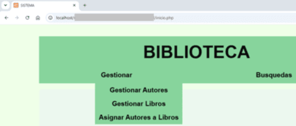

Conexion desde PHP a la Base de Datos biblioteca en MySQL.
Aspectos más importante para crear una aplicación web conectada a una base de datos MySQL usando POO en PHP.
Se recomienda ejecutar el código del programa de ejemplo para ver cada opción en acción.
Un software CRUD permite relizar acciones sobre los datos de las tablas de las Base de Datos como agregar nuevas filas, modificar algún dato de la tabla y eliminar alguna fila de la tabla.
| Create | Read | Update | Delete |
|---|---|---|---|
| Crear/Agregar: INSERT INTO | Leer /Mostrar: SELECT * FROM | Actualizar /Modificar: UPDATE...SET | Eliminar /Borrar: DELETE FROM |
